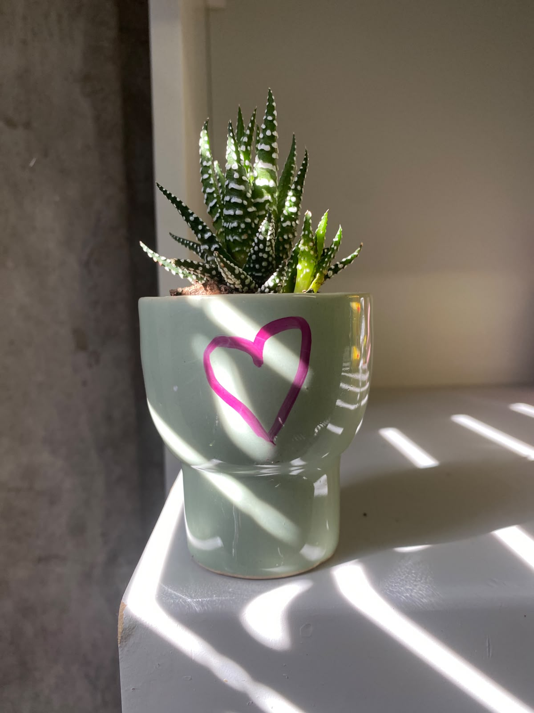
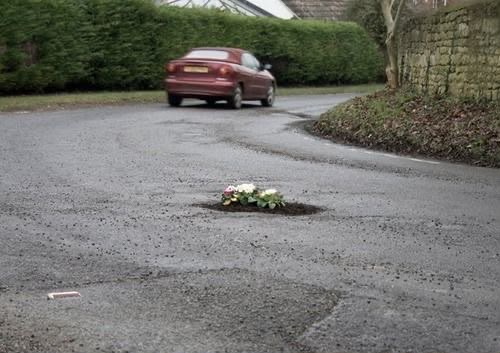
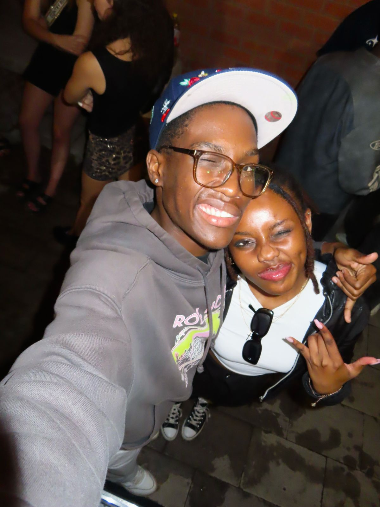
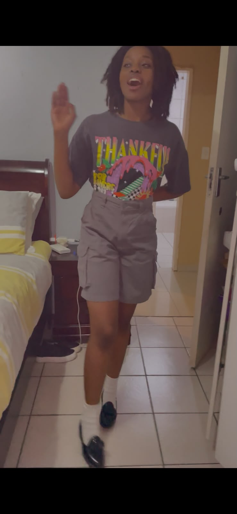
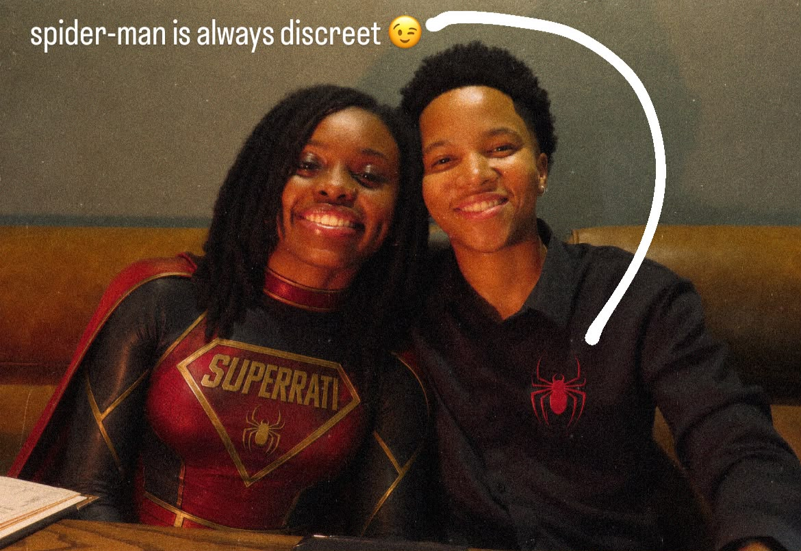
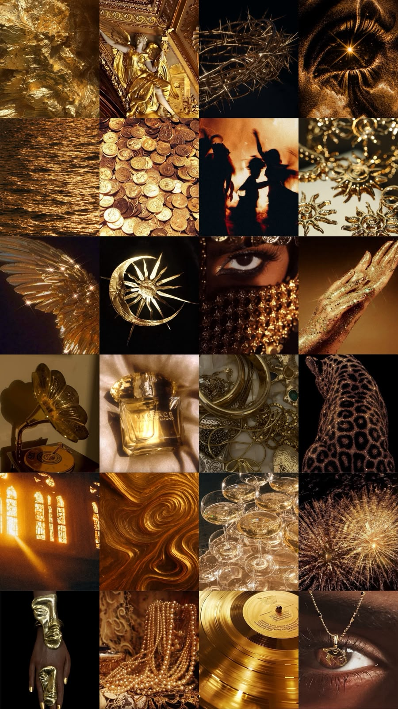
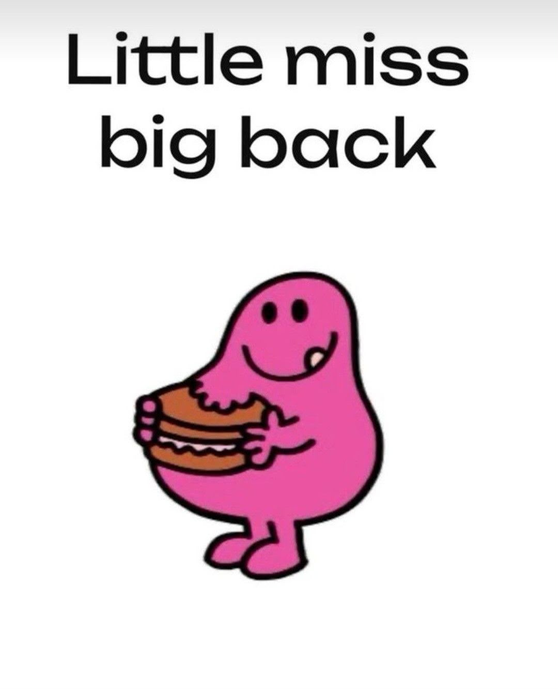
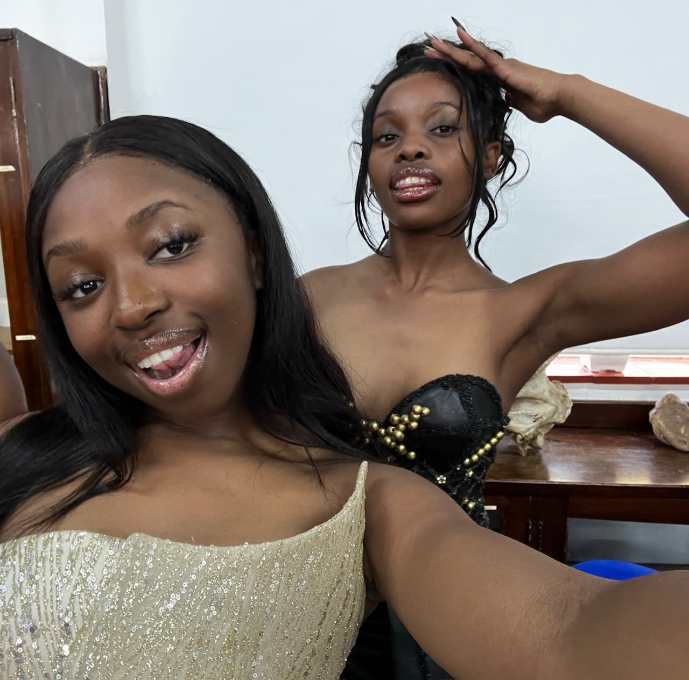
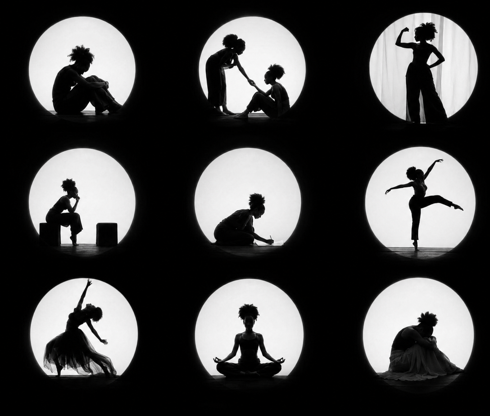

Every letter here was written by someone who loves you. Read one when you need it most.
For you
P
Pabi 🎀
7:03 AM

Still Growing — Just Like My Succulent
You know I was looking at the succulent you gave me the other day, and I started laughing — because by all logic that plant should be dead. But somehow it's not…
A
Amo
7:41 AM

You Are Not the Exception to Your Own Way of Approaching Life
You've always been someone who sees the potential in others before they see it in themselves. And I know, because you've done it for me so many times…
T
Tino
8:15 AM

A Special Kind of Person — That's Exactly What You Are
I don't know if you hear this enough, but you mean so much to the people around you. You're the kind of person who shows up for others without hesitation…
Pa
Panji
8:52 AM
A Future Entertainer Who Studied Computer Science — That's a Flex
I know you're going through a lot and feel like everything is coming at you all at once and you can't catch a break. I will share what I've learned from my short life experience…
L
Lindelwa
9:30 AM

You Are Skittles. You Are Shanikwa. You Are More Than You Know.
When I was asked to think of a memory that reminds me of you, I realised I had a problem. I have known you your entire life — twenty years of memories is a lot to choose from…
S
Spidey
10:08 AM

What Is Spider-Man Without His SuperRati?
I'm so proud of you — and I know you're probably rolling your eyes reading that, because you're already listing all the reasons why you shouldn't be…
U
Uyanda
10:44 AM

Everything You Touch Turns to Gold
My mom's favourite, third child — girl, I love how you shine your light in every moment you can. It's like everything you touch turns to gold…
M
Musa
11:20 AM

You Made Being Spontaneous Look So Cool
The biggest compliment I can give since the moment I met you in first year is this: you make being spontaneous look so cool…
Li
Lihle
11:55 AM

How You Show Up
We've had good times, difficult times, and everything in between. But through it all, one thing has always stood out to me — how you show up for the people you care about…
Me
Melaney
12:30 PM

Versions of Yourself People Get to Experience
There is the version that shows up to mentor meetings and somehow leaves people feeling lighter than when they arrived…